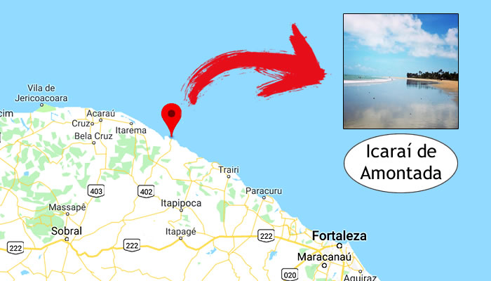

Localização do Icaraízinho
Icaraízinho de Amontada está localizado no município de Amontada, no estado do Ceará, Brasil. Fica a cerca de 190 km de Fortaleza, capital do estado, em uma região que oferece fácil acesso a partir da rodovia CE-085. Cercado por praias paradisíacas e vilas de pescadores, o local oferece uma beleza natural única, com dunas, coqueirais e uma extensa faixa de areia branca. O trajeto até Icaraízinho é repleto de belas paisagens, o que torna a viagem ainda mais agradável. A região é acessível de carro e há opções de transfer saindo de Fortaleza.
